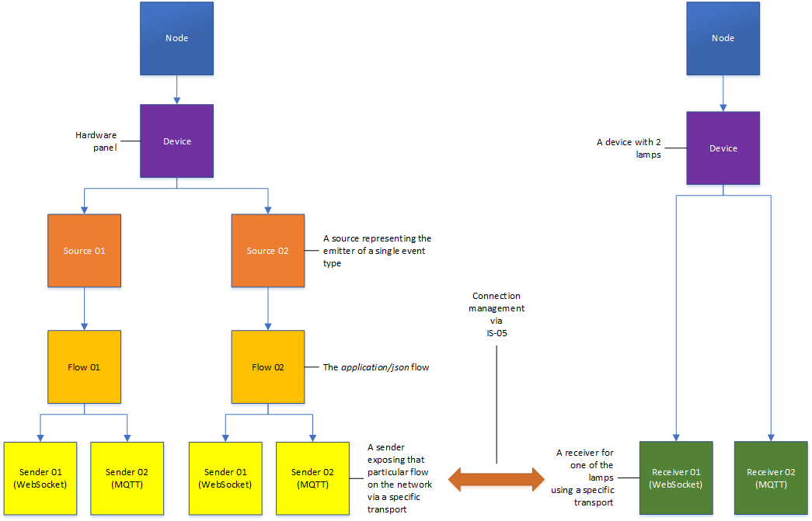

Core models
(c) AMWA 2018, CC Attribution-ShareAlike 4.0 International (CC BY-SA 4.0)
This document specifies the core models and strategies employed.
Other sections can be accessed from the Overview.
1. Introduction
The following transports are supported:
The v1.0 specification relies on the following existing specifications:
- IS-04 v1.3
- IS-05 v1.1
In terms of relationships and workflows the following diagram shows an example:

The diagram does not aim to show any ownership but instead relationships and workflows. A source is the emitter of a particular type of event and plays a vital role in identity. A flow describes the media type for the associated event type. A sender reflects the transport used to package a particular flow on to the network and a receiver is capable of receiving a set of event types using a particular transport.
2. IS-04 highlights
2.1. Sources
Event sources have a new field called event_type in order to describe the event type emitted.
Event sources use the urn:x-nmos:format:data format.
Example:
{
"tags": {},
"caps": {},
"parents": [],
"description": "Vision Mixer In 5 Active",
"format": "urn:x-nmos:format:data",
"label": "Vision Mixer In 5 Active",
"id": "7a855001-0a87-4ce1-b490-b9d648cd6566",
"device_id": "9ce6993a-db5f-47c9-babe-ee956945006d",
"version": "1530806114:000000000",
"clock_name": null,
"event_type": "boolean"
}
2.2 Flows
Event flows also have a new event_type field.
Event flows use the urn:x-nmos:format:data format and have the media type set to application/json.
Example:
{
"tags": {},
"parents": [],
"description": "Virtual Button 1",
"format": "urn:x-nmos:format:data",
"label": "Virtual Button 1",
"id": "ff455cf3-fb17-448b-8f4c-e6c0e294f5ed",
"source_id": "7b9d4864-5d6d-4227-a81d-8dd3e13e99b3",
"version": "1529676926:000000000",
"media_type": "application/json",
"event_type": "boolean",
"device_id": "58f6b536-ca4c-43fd-880a-9df2501fc125"
}
2.3 Senders
The supported transports have been extended to include:
urn:x-nmos:transport:mqtturn:x-nmos:transport:websocket
Neither of these transport types require a transport file (manifest_href).
Example:
{
"tags": {},
"interface_bindings": [
"eth0"
],
"subscription": {
"receiver_id": null,
"active": false
},
"description": "Virtual Button 1",
"transport": "urn:x-nmos:transport:mqtt",
"label": "Virtual Button 1",
"id": "68f519a3-5523-4b2c-b72d-ec23cc80207d",
"device_id": "58f6b536-ca4c-43fd-880a-9df2501fc125",
"flow_id": "0554b43a-ea7c-418d-a39e-1205ee281af3",
"manifest_href": null,
"version": "1529676926:000000000"
}
2.4. Receivers
Event receivers have a new array called event_types inside the caps field in order to list all of the event types they can consume (more details in Event types).
Event receivers use the urn:x-nmos:format:data format and if the media_types array is present inside the caps field, it must include application/json.
The supported transports have been extended to include:
urn:x-nmos:transport:mqtturn:x-nmos:transport:websocket
Example:
{
"tags": {},
"caps": {
"media_types": [
"application/json"
],
"event_types": [
"boolean"
]
},
"interface_bindings": [
"eth0"
],
"description": "Virtual Lamp 1",
"format": "urn:x-nmos:format:data",
"transport": "urn:x-nmos:transport:mqtt",
"label": "Virtual Lamp 1",
"id": "8a7bb1c1-4a82-4fd9-a4fb-96f68f560831",
"device_id": "58f6b536-ca4c-43fd-880a-9df2501fc125",
"version": "1529676926:000000000",
"subscription": {
"sender_id": null,
"active": false
}
}
3. NMOS Parameter Registers highlights
Event devices have an additional control in the controls array for the Events API (see Events API).
The definition for this control is detailed with an entry in the NMOS Parameter Registers.
4. IS-05 highlights
4.1. MQTT sender transport parameters
The following transport parameters are exposed (as defined for the MQTT transport in the IS-05 specification):
destination_hostdestination_portbroker_protocolbroker_authorizationbroker_topicconnection_status_broker_topic
In addition, this specification defines the following additional parameter:
ext_is_07_rest_api_url(the URL of the Events API resource for the associated source)
ext_is_07_rest_api_url schemas and examples are defined in IS-07 following the IS-05 templates.
4.2. WebSocket sender transport parameters
The following transport parameters are exposed (as defined for the WebSocket transport in the IS-05 specification):
connection_uriconnection_authorization
In addition, this specification defines the following additional parameters:
ext_is_07_rest_api_url(the URL of the Events API resource for the associated source)ext_is_07_source_id(the event source id used for filtering subscriptions)
ext_is_07_rest_api_url schemas and examples are defined in IS-07 following the IS-05 templates.
ext_is_07_source_id schemas and examples are defined in IS-07 following the IS-05 templates.
4.3. MQTT receiver transport parameters
The following transport parameters are exposed (as defined for the MQTT transport in the IS-05 specification):
source_hostsource_portbroker_protocolbroker_authorizationbroker_topicconnection_status_broker_topic
In addition, this specification defines the following additional parameter:
ext_is_07_rest_api_url(the URL of the Events API resource for the associated source)
ext_is_07_rest_api_url schemas and examples are defined in IS-07 following the IS-05 templates.
4.4. WebSocket receiver transport parameters
The following transport parameters are exposed (as defined for the WebSocket transport in the IS-05 specification):
connection_uriconnection_authorization
In addition, this specification defines the following additional parameters:
ext_is_07_rest_api_url(the URL of the Events API resource for the associated source)ext_is_07_source_id(the event source id used for filtering subscriptions)
ext_is_07_rest_api_url schemas and examples are defined in IS-07 following the IS-05 templates.
ext_is_07_source_id schemas and examples are defined in IS-07 following the IS-05 templates.
4.5. Ext_ transport parameters
All of the ext_ transport parameters mentioned in the previous sections follow the same templates as the IS-05 core parameters. They are supported by associated schemas, examples, constrains and staged/active entries. These are defined in the IS-07 specification as opposed to the core transport parameters defined in IS-05.
ext_is_07_rest_api_url
The ext_is_07_rest_api_url parameter represents the URL to the Events API resource which offers the current state and type of an event emitter (source) (see Events API)
The sender should populate the ext_is_07_rest_api_url field by starting with the href offered by the urn:x-nmos:control:events/v1.0 control in the controls array of the IS-04 device associated with the sender.
The sender should append the relative path sources/{source_id}/, where the source_id is the unique ID of the source associated with the sender (see ext_is_07_source_id).
A receiver can expect the ext_is_07_rest_api_url to follow the format above and need only append one of the following relative paths:
state(to retrieve the current state of the emitter)type(to retrieve the type definition object associated with the emitter)
Implementations may encounter URLs with or without a trailing slash. In order to avoid cases of double slashes or missing slashes, implementations are required to exercise caution when appending paths.
ext_is_07_source_id
The ext_is_07_source_id transport parameter represents the source id which is the emitter of the event. The sender will populate this with its associated source id.
4.6. Connection management
Event & Tally connection management only supports IS-05 connection management (the legacy IS-04 connection management is not supported and deprecated).
The usage of the transport parameters identified in the previous sections is detailed in each transport section and in the Events API section.